Sephora Perfume Detail Page Redesign
Business Goal
While Sephora is striving to be No.1 in every beauty market, fragrance business is a less-mentioned by customers than its makeup business. Based on our survey, 84.27% of Sephora's customers prefer to purchase perfume from stores than sephora.com. We aim to improve Sephora' perfume online sales through research, design and validation.
The Challenge
Perfume Online Sales is Way Less than Its' Instore Sales.
While Sephora is striving to be No.1 in every beauty market, fragrance business is a less-mentioned by customers than its makeup business. Based on our survey, 84.27% of Sephora's customers prefer to purchase perfume from stores than sephora.com. We aim to improve Sephora' perfume online sales through research, design and validation.
Problems Identified
According to our survey, 84.27% of perfume purchaser prefer instore shopping.
Customers purchase perfume after they knew important perfume data, like scent, lasting time, type and so on. For blind buy purchase behaivors, salers like Sephora need to enable users test their interested ones to validate their purchase decisions, being able to smell different perfumes is the No.1 reason that they prefer offline purchase.
People with limited access to real-estate stores have a higher potential to purchase online.
Online perfume purchase has the advantage of more discounts, ability to do more research and ability to find a specific perfume than offline perfume purchase. People go to real-estate stores as a stop to test new perfume, but for people having limited access to such real-estate services, they leverage on online services like free shippings, cheaper price and larger stock.
Our Solutions
Sample Services and Explorable User Comment System
Design Process
01 Qualitative Research
Competitors in High-End Perfume Markets
In USA, Sephora is considered a high-end cosmetic store in the US market. Many digital marketing stretegies and design make them standout among its competitors in their recognized friendly instore environment, their professional product consultants and beauty eductions. Among these high-end perfume stores, customers' perfume shopping alternatives includes similar beauty stores like Ulta, and omnichannel retailers like Macy's.
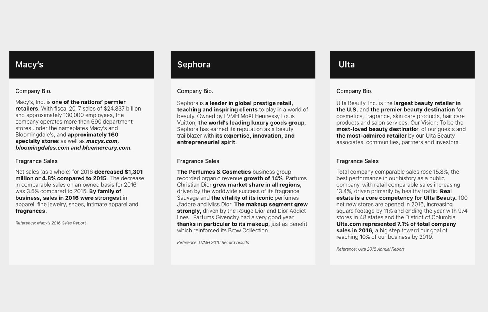Instore Perfume Business Attracts 14/16 Customers
Store, website and app are the three main channel to access to the customers. We assume that users experienced different pain points due to the different contexts. To research this, an naturalistic observation in stores were carried out to discover customers' interactions with the assistants and the displays; Interviews were carried to understand user intentions and frustrations; Web and App decompositons were utilized to understand important features provided.

Restock Rather Than Explore New Products
With low user acceptance rate for online perfume purchase, 7 contextual inquiries are carried out. The participants were asked to use the website to make a perfume purchase, we then mapped their behaviors onto the web interface maps. The color represent the frequency of users' interaction towards each features. We discovered that users used search box the most since they always utilized the website to restock their purchase. They find it rather hard to read through the long and abstrack text description where they cannot know the scents.
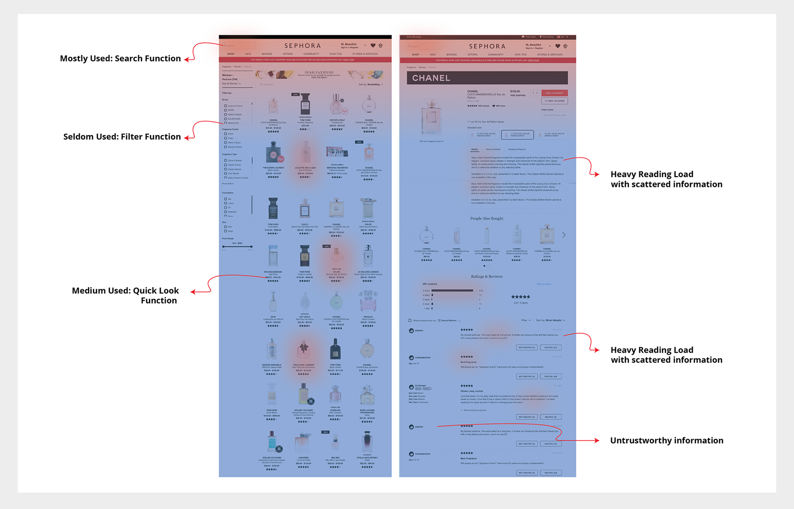02 Quantitative Research and Validation
To validate our qualitative research results, a survey was carried out to reach a larger audience than what is available through observations or interviews. The structured and standardized questions will help to avoid potential biases and has greater statistical significance, enabling us to consider generalization. Take The Survey Here.
Finding 1: 84.27% of perfume purchaser prefer instore shopping, compared to online shopping.
Q9 questions helps us understand the segment of online users and offline users. It also helps us understand the potential market size of online shopping. Q6 reveals that explore new fragrance and restock are the top two purchase intentions. This helps us better understand our users' goal and prioritize our following personas.

Finding 2: Sephora.com's Top 1 online competitor is Amazon.
This questions helps designers and researchers realized our own biases where we completely neglected the tech giant, the largest Internet retailer Amazon. We assumed that amazon wins in its shipping and returning policy as well as its variety of perfumes spanning from cheap to luxury.
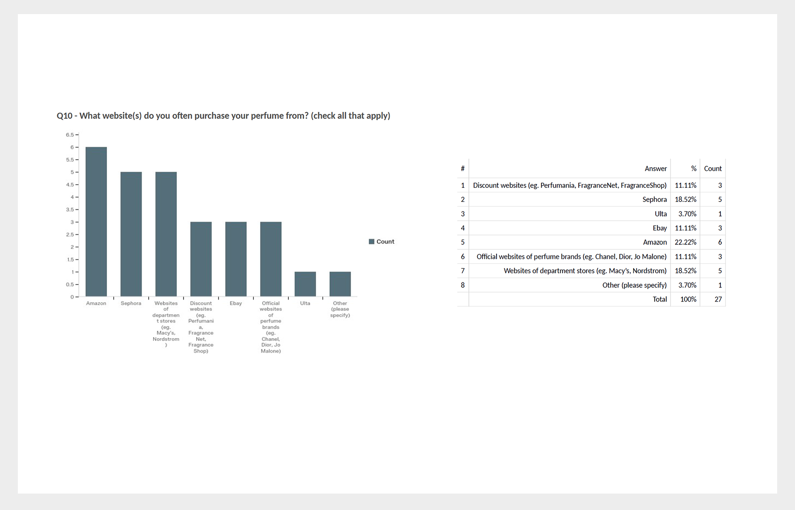Finding 3: While customers value instore shopping by the ability to smell different perfumes, online shopping still have its privilege in discounts, ability to research and relative larger variety than instore perfume purchase.
We designed this two questions according to the results from semi-structured interviews, the comparison makes it more clear of online perfume shopping's strength and weakness. It also validate our prior research that users prefer instore purchase in that customers could test the scent of a perfume.
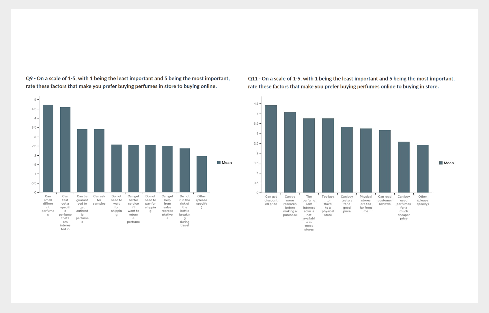02 Design Direction
User Personas
We identified the following three personas as our main website users. We utilized the demographics results in our survey to best reflect the users info and provide guidance for the following design activities.
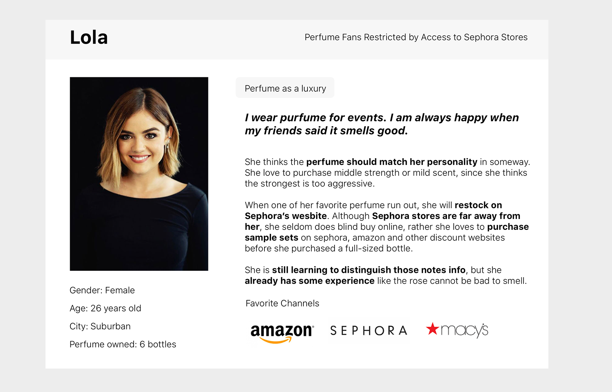 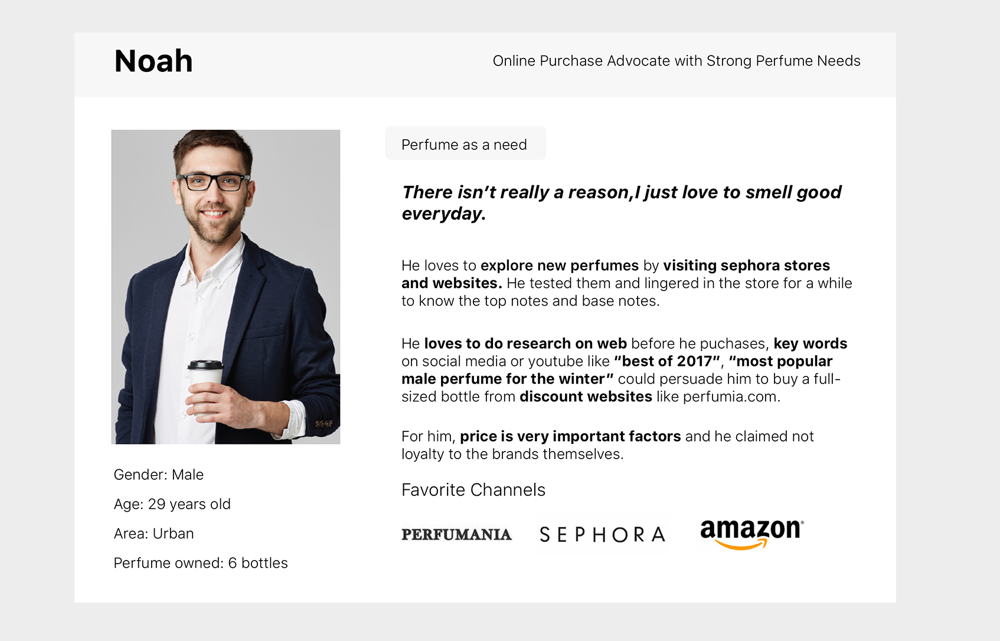 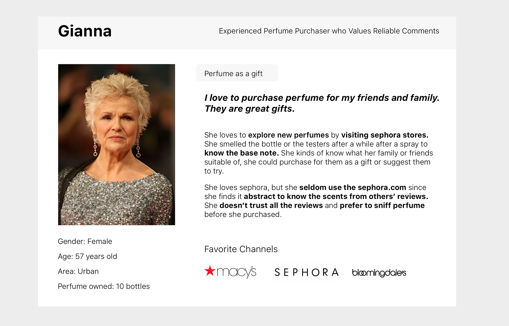Online Perfume Purchase Painpoints
Users's quotes were analyzed through affinity diagram. We discovered that for sephora.com, users are in urgent demands for the following services.
1. Users want better sampling service that can allow them to smell the scent;
2. Users want better suggestions that are individual to them and something similar to what they like.
3. Users are disppointed by the online Fragrance IQ test and want enhanced filtering system.
4. Users want social engaged with their trusted friends to get recommendations.
5. Users want better deals and more informations for specific perfume.
03 Design Solution Iteration
Know the Scent by Customized Sample Service before Purchase
Perfume samples are valued as the second most important strategy by users, while it could provide users the most concrete and personalized information regardless of their perfume experience. We compare two different sample concepts below. And through general user feedback, we discovered that users value a fully personalized bundle that follow the natural sequence from interest.

Utilize User Comments for Easier Pre-purchase Research
Current reviews are a big problem for users to find out their trusted comments. Perfume users are seeking information that can support their purchase strategy. For expert users, they are looking for professional words like perfume notes, lasting time and so on, while novice users are looking for abstract describing words like "fresh" "sweet" "sexy women". They need to dig deep into the untrustworthy and heavy text information which turns them down.

We visualized the scent info as well as implement shortcuts for users to quickly input.
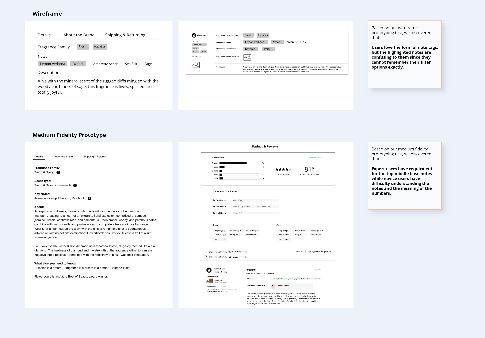To encourage users to actively report useful information in the user reviews, we modified the review page with important information could be easily input by selection.
Professional Hub for Personalized Suggestions
Considering perfume as only one of the business segments for sephora, how to manage and present perfume related info without overwhelming other users. We decided to utilized the personal profile page as a personalized data management hub.
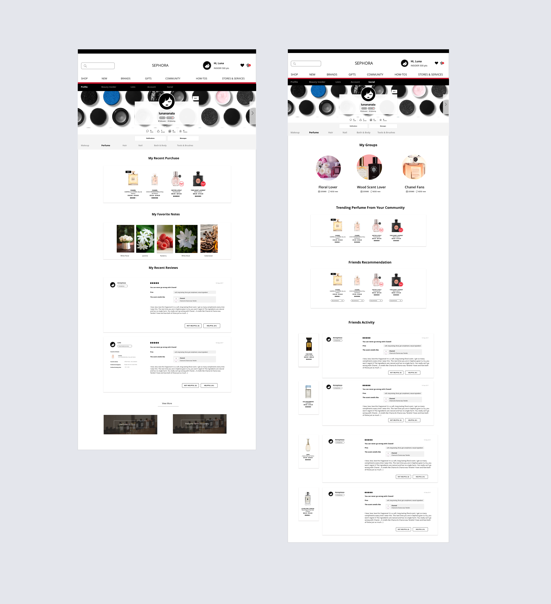04 Usability Testings
AB Testing
Participants were asked to identify an interested perfume according to infos provided by our refined website and the unrefined sephora.com. Participants were presented with TLX Load chart when they finished the task. Random methods are utilized, half of the participants were presented with unrefined sephora website first while the other half of participants were presented with refined sephora website first. Their reflection were averaged as follows.
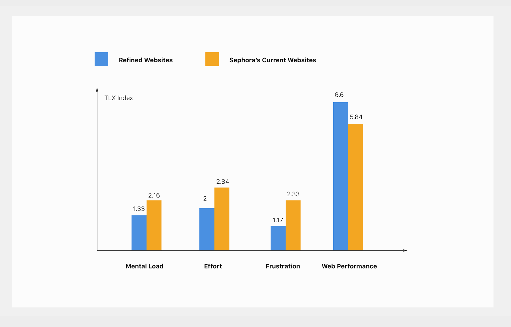Benchmark Tasks
Participants were first asked their confidence level in online purfume purchase.And then finish the following two tasks. Benchmark Task 1: Find a perfume that you think smells similiar to Chanel No.5; Benchmark Task 2: Purchase a sample of your interested perfume. Participants were then asked their confidence level in online perfume purchase.
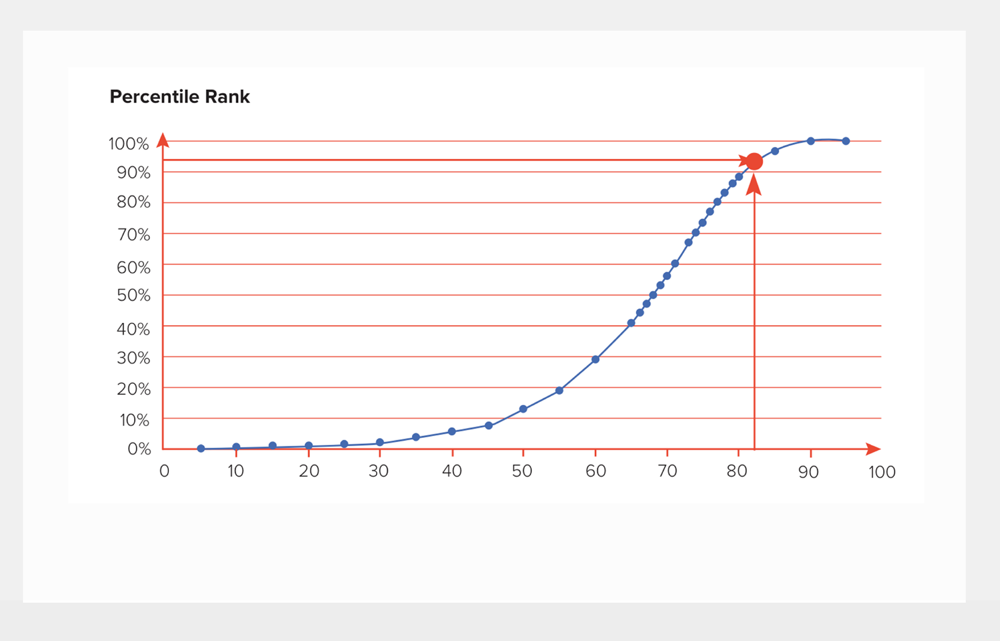05 Reflections
The emerge of online and offline shopping experince.
This research uncover many transfers between online purchase and offline purchase. While online shopping is a trend now, for products like perfume, users treat stores as the first-hand stop to get more information about perfume. This is consistent with Nelson Norman's instore and online shopping article discoveries.